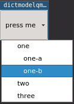
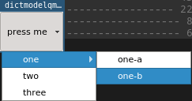

DictModelQMenu¶
Methods¶
qconcurrency.widgets.DictModelQMenu.__init__(...) |
dictmodel (DictModel): |
qconcurrency.widgets.DictModelQMenu.staticMetaObject |
|
qconcurrency.widgets.DictModelQMenu.triggered_row |
Documentation¶
-
class
qconcurrency.widgets.DictModelQMenu(dictmodel, menustyle='submenu', indexinfo={'id': '_id', 'name': 'name'})[source]¶ Bases:
PySide.QtGui.QMenuQMenu, whose actions/submenus are based/rebuilt from a
DictModel. There are 2x display methods:- indented: every
DictModelRowin the model is - a action. Items in nested-tables are indented, and positioned under their parent.
- indented: every
- submenu:
DictModelRows that contain - child-tables are presented as submenus.
Only bottom-level
DictModelRowitems are actions.
- submenu:
Example
menustyle='indented'menustyle='submenu'-
__init__(dictmodel, menustyle='submenu', indexinfo={'id': '_id', 'name': 'name'})[source]¶ - dictmodel (DictModel):
- The model whose contents we are using to generate the popup menu contents. Nested tables will appear in sub-menus.
- menustyle (str, optional):
(ex: 'submenu', 'indented' ) This argument determines how to handle nested tables in the DictModel.
- submenu: each item containing children will be implemented
- in the menu as a submenu. Only the items from the bottom-most nested-table can be selected.
- indented: every item is selectable, child items are merely
- indented to indicate that they are children of their parent.
- indexinfo (dict, optional):
(ex: {'id':'_id', 'name': 'name'} ) A dictionary containing the keys id and name. The value of these keys represent the name (appears in qmenu) and it’s corresponding databaseId.
The values of these keys are column-names from the dictmodel. See
DictModel.__init__()
-
staticMetaObject= <PySide.QtCore.QMetaObject object>¶
-
triggered_row= <PySide.QtCore.Signal object>¶